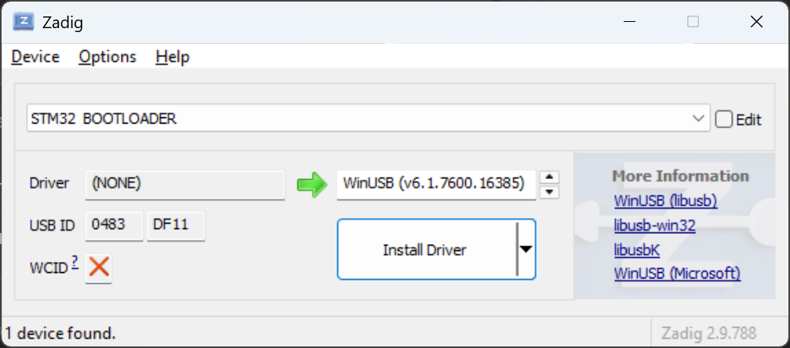
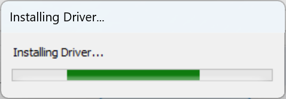

Supports Fire and Ice One ROMs. Works on Windows, Mac, Linux and Android.
Use Chrome, Edge, or another Chromium based browser. See Usage for instructions.
Device Information
Device Firmware Details
Programming
Program One ROM with a One ROM firmware binary hosted online.
Program One ROM with a single ROM binary image that you upload. For more complex configurations, use One ROM Studio and a ROM config JSON file.
Device Configuration
ROM Configuration
No file selectedUsage
- First time setup:
- Plug in your One ROM USB. If this is a factory fresh One ROM USB jump the B0 and 3V3 pads on the underside while plugging it in. If the red LED doesn't light up faintly, try again.
- Click the "Connect" button. A popup will appear asking you to select a device. Select "RP2350 Boot" (Fire) or "STM32 BOOTLOADER" (Ice) and click "Connect". On Android you may receive another pop-up asking you to confirm the browser's USB access.
- The device's current firmware will be read and analyzed, with information being displayed once complete.
- Choose the firmware source: Pre-built, Custom, Local or URL.
- (Ice only) Select the MCU variant you are programming, and in the case of the pre-built image, your PCB revision and desired One ROM firmware version. If an ONE ROM firmware was detected on the device you can use the values displayed. On Fire, RP2350 will be pre-selected.
- Choose a pre-built config, upload and configure the ROM image, select a local firmware file, or enter the URL of the firmware file to program.
- Click the "Program" button.
- The button text will change to "Erasing". Wait for this to complete.
- The button text will change to "Programming". Wait for this to complete.
- When done, the device will be re-analyzed to verify the programming operation. Once complete, you can disconnect One ROM and plug it into your retro system.
Problems
If you encounter any issues using this programmer, raise a GitHub issue.
FAQ
- Q: What if I hit problems?
- Q: Why do I have to select the STM32 variant?
- A: So the programmer can ensure the firmware you provided is for your specific STM32 chip, and that your One ROM USB has enough flash space for the firmware image.
- Q: How do I know what STM32 variant my One ROM has?
- A: Read the part number from One ROM's main IC. You are looking for the 6 characters immediately after "STM32".
- Q: Why isn't there a pre-built image for my system?
- A: Either build it yourself using the One ROM github repo, or raise a GitHub issue letting us know where we can find the ROM image(s) you want One ROM to serve.
- Q: Why isn't my STM32 variant listed?
- A: Pre-built images are available for the most commonly used STM32 variants. You can build images for other variants using the One ROM github repo.
- Q: Can I use this with Firefox, Safari, or another non-Chromium browser?
- A: WebUSB, the technology behind this programmer, is only supported in Chromium based browsers like Chrome and Edge.
- Q: Can I use this on Linux or Mac?
- A: Yes, but you must still use a Chromium based browser.
- Q: Can I use this with a non-USB version of One ROM?
- A: This programmer currently only works with the USB version of One ROM.
- Q: Can I use this to program other, non-One ROM, STM32 devices?
- A: This programmer only programs valid One ROM USB firmware - it checks the image before programming. However, the site is based on generic STM32 DFU and RP2350 PICOBOOT implementations, and the code is MIT licensed, so you are free to copy and modify it for your own purposes. For the RP2040/RP2350 see picoflash.org, which is a generic implementation.
- Q: Can I use this on my phone or tablet?
- A: Yes, on an Android device using Chrome. One ROM Web does not work on iPhone or iPad due to Apple's restrictive approach towards USB devices.
- Q: Is my privacy protected?
- A: We do not collect any personal data. We use GoatCounter for privacy-friendly analytics.
- Q: Where can I find the source code for this programmer?
- A: The github repo.
- Q: When I press "Connect" why does it sometimes read the One ROM twice?
- A: Firmware versions prior to v0.5.0 stored the ROM metadata in a different location on flash. This tool attempts to read just the first 64KB (metadata location for v0.5.0+) and if the ROM metadata is not present, then re-reads the entire flash to find it.
Windows Setup
These steps should not be required for Fire boards.
- Download and install Zadig.
- Plug in your One ROM USB. If this is a factory fresh One ROM USB, jump the B0 and 3V3 pads on the underside while plugging it in. If the red LED doesn't light up faintly, try again.
- In Zadig, select "Options" > "List All Devices".
- In the dropdown, select "STM32 BOOTLOADER".
- From the driver selection box on the right of the big green arrow, select "WinUSB (some version number)".
- Click "Install Driver". If it says "Replace Driver" or "Reinstall Driver", click that instead.

- Wait for the installation to complete. It may take a few seconds for the progress pop-up to appear.


- You can now close Zadig.
Linux Setup
-
Create a file called
/etc/udev/rules.d/51-one-rom.ruleswith the following content:SUBSYSTEM=="usb", ATTRS{idVendor}=="0483", MODE="0666"SUBSYSTEM=="usb", ATTRS{idVendor}=="2e8a", MODE="0666" -
Then run:
sudo udevadm control --reload-rules sudo udevadm trigger -
If you are using Chromium installed via snap, you need to allow Chromium to use USB by running:
Then restart Chromium.snap connect chromium:raw-usb
How It Works
- The page uses WebUSB to access One ROM USB directly from your browser.
- One ROM firmware parsing and building routines are run using Web Assembly directly within your browser.
- For security reasons, WebUSB is only available when this site is served over HTTPS (or from localhost) - you are recommended to use it at https://onerom.org/web/. This version is built directly from the main branch of the One ROM website's github repository, and served by GitHub.
- Only the device you select when you hit "Connect" or "Program" can be accessed by this page's javascript code - your other USB devices are not visible to it. None of your devices, including your chosen one, are visible to the server.
- The page's javascript code implements the STM32 DFU and RP2350 PICOBOOT protocols, performing the necessary flash load, erase and programming operations on your One ROM USB.
- The firmware on your One ROM USB can only be updated when it is in programming mode. This is automatically enabled when you plug in One ROM to a USB host, like a PC, unless you have a completely "fresh from the factory", or bricked, One ROM USB.
- If you have factory fresh, or bricked, One ROM USB, you need to manually put it into programming mode before flashing, by jumping B0 and 3V3 (Ice) or B and GND (Fire) on the underside of One ROM, while plugging it into USB.
- One ROM's status LED is lit dimly when in programming mode.
Privacy
One ROM Web is hosted and served by GitHub Pages. It retrieves One ROM firmware manifest information from GitHub. GitHub may log your browser details and IP address.
Most of the site's functionality runs entirely in your browser, and no personally identifiable data is stored by any server other than the GitHub pages server:
- When your browser loads this page, it tests whether a piers.rocks server is responding, and enables the pre-built image functionality if so. The piers.rocks server logs your browser's User-Agent string (which typically includes your OS and browser version) and the firmware file being downloaded, but does not log any personally identifiable information like your IP address.
- If you flash a pre-built image, the image is downloaded from GitHub via a piers.rocks server. This is done to work around javasript limitations when retrieving GitHub release artifacts. The piers.rocks server logs your browser's User-Agent string (which typically includes your OS and browser version) and the firmware file being downloaded, but does not log any personally identifiable information like your IP address.
- If you flash a local file, it is read directly from your computer, and not sent to any server.
- If you flash an image from a URL, the image is downloaded directly from that server by your browser. That server may log your IP address and browser details, as any web server might.
- The site uses GoatCounter for privacy-friendly analytics.
If you have any questions about privacy, please raise a GitHub issue.